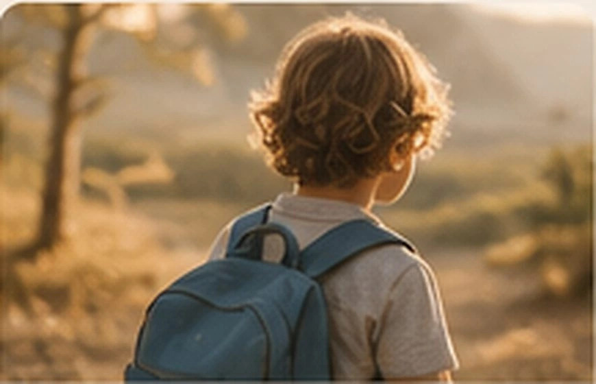
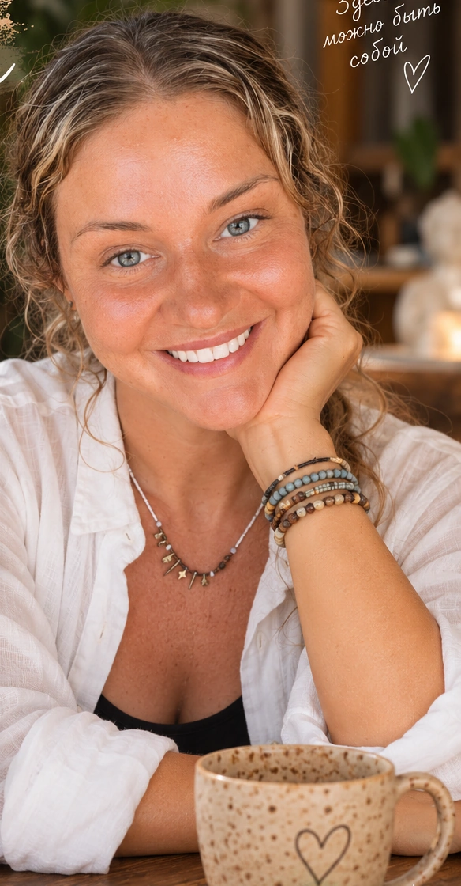
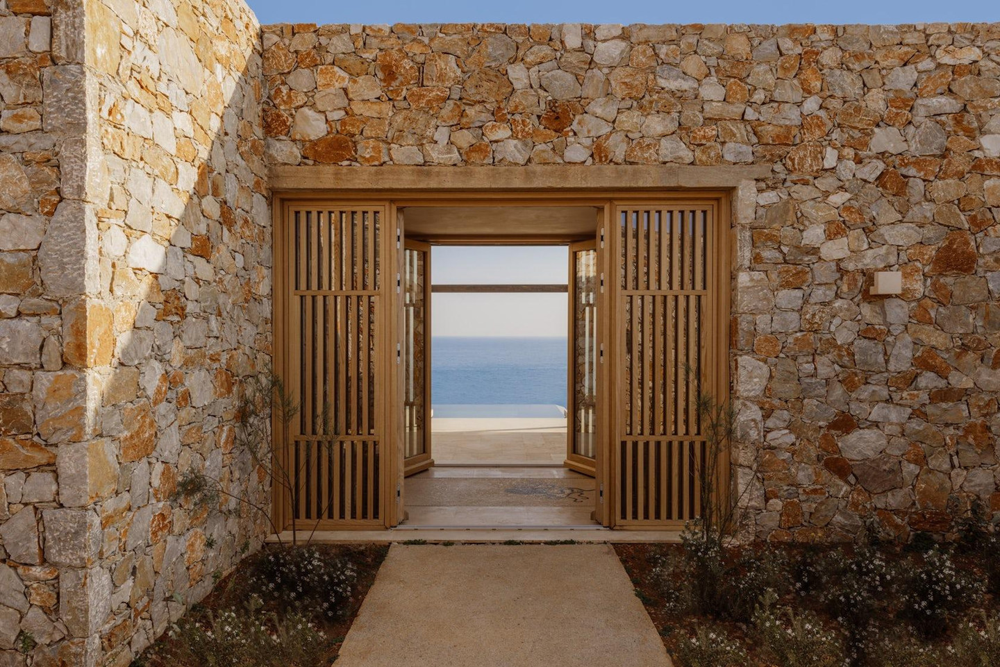

Когда представления о будущем меняются
Когда у нас появляется ребёнок, вместе с ним рождаются представления о будущем. Иногда развитие ребёнка идёт иначе. Иногда изменения наступают после болезни или травмы. Появляются обследования, специалисты, новые слова. И вместе с ними — страх, растерянность, злость, усталость, надежда. Можно безусловно любить своего ребёнка и при этом испытывать боль от того, насколько непростой оказалась жизнь. Родителям не всегда нужна история о собственной силе. Иногда им необходимо пространство, в котором можно сказать: «Я устала». Этот маршрут — о возможности увидеть и ребёнка, и себя.
Материалы и практики

За пределами диагноза
Напиши имя ребёнка в центре листа. Вокруг запиши всё, что делает его именно им: интересы, привычки, способы общаться, выражать радость, узнавать мир. На время оставь в стороне медицинские и педагогические характеристики.
Продолжить практику →
Зачем это упражнение: чтобы в собственном темпе исследовать переживания через действие, образы или слова — без требования получить правильный результат.
- Подготовь удобное место и материалы, названные в описании. Можно остановиться в любой момент.
- Выполни упражнение, описанное выше, не торопясь и замечая, какие решения хочется принимать по ходу.
- Посмотри на получившееся. Что оказалось важным? Что хочется сохранить, изменить или оставить без ответа?

Два пространства
Возьми два кусочка глины или два листа бумаги. Один обозначает пространство ребёнка, другой — твоё. Создай две формы. Достаточно ли места каждой? Что их соединяет? Можно менять композицию. Эта практика — о том, что вы два отдельных человека.
Продолжить практику →
Зачем это упражнение: чтобы в собственном темпе исследовать переживания через действие, образы или слова — без требования получить правильный результат.
- Подготовь удобное место и материалы, названные в описании. Можно остановиться в любой момент.
- Выполни упражнение, описанное выше, не торопясь и замечая, какие решения хочется принимать по ходу.
- Посмотри на получившееся. Что оказалось важным? Что хочется сохранить, изменить или оставить без ответа?

Маленькие открытия
В течение нескольких дней замечай моменты, не связанные с достижениями или трудностями: общий смех, музыка, игра, спокойное время рядом. Записывай наблюдения или собирай рисунки. Пусть это будет коллекция вашей общей жизни, а не отчёт об успехах.
Продолжить практику →
Зачем это упражнение: чтобы в собственном темпе исследовать переживания через действие, образы или слова — без требования получить правильный результат.
- Подготовь удобное место и материалы, названные в описании. Можно остановиться в любой момент.
- Выполни упражнение, описанное выше, не торопясь и замечая, какие решения хочется принимать по ходу.
- Посмотри на получившееся. Что оказалось важным? Что хочется сохранить, изменить или оставить без ответа?
Интерактивная заметка
Здесь можно записать свои мысли. Нажми «Скачать заметку», чтобы сохранить её только на своём устройстве. Записи не отправляются на сайт.
Индивидуальная поддержка
На индивидуальной встрече можно исследовать переживания в собственном темпе, без необходимости приходить с готовыми ответами. Поддержка строится вокруг твоей ситуации и потребностей.
Познакомиться со специалистами →Группы и встречи
«Рядом с тобой» — концепция поддерживающей арт-терапевтической группы. Через творчество, работу с материалами и разговор участники могут исследовать свой опыт. Даты и условия участия пока не определены.
Подробнее о группах →В завершение
Принятие — не одно решение, которое принимают раз и навсегда. Детство происходит уже сегодня. И жизнь вашей семьи — тоже.